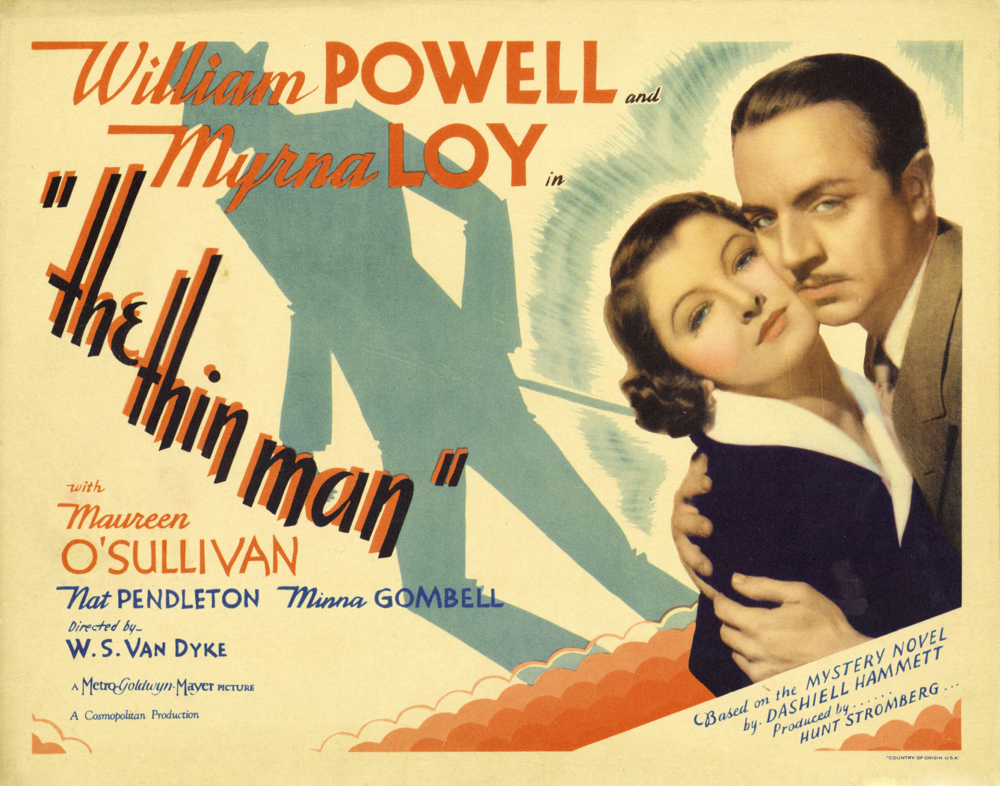

An Appreciation for The Thin Man
19 Feb 2026 · 5 min read

The Thin Man is a film from 1934 based on the mystery novel of the same name by Dashiell Hammett.
In my judgment, this is one of those rare cases where the film is actually better than the book, without sacrificing much of value from the written text.
I’ve watched the film repeatedly over the years and my appreciation for it has only grown with each viewing.
Here’s why.
(Warning: some of my analysis may contain plot spoilers. If you’re concerned about such things, watch the film first before reading further).
Signs of the Times
The timing of the film was propitious: the book and film came out just after the end of Prohibition, and the film was made and released quickly, just before the stricter enforcement of the Hays Code began.
And these spirits of the times were reflected in the action and dialogue and overall feel of the film, which was easy and breezy and carefree (and more than a little boozy, and occasionally a bit racy).
Nick and Nora (as played by Powell and Loy)
The two stars, William Powell and Myrna Loy, had a natural rapport, and a mutual respect, and this chemistry is very much etched onto the celluloid of the film (or burnt into the bits of your digital copy, if you prefer). And this relationship was supposedly based on the somewhat comparable real-life relationship of author Hammett himself with playwright Lillian Hellman.
A Refreshing Take on Traditional Mysteries
As a mystery, the movie offered some refreshing variations on some of the standards of the genre.
First, it was in no sense a noir, unlike some of Hammett’s earlier works, and other books and films of that era. (If anything, it was a sort of anti-noir, with the Dorothy Wynant character, played by Maureen O’Sullivan, believing at one point that she was rotten to the core, because she had inherited the genes of a murderer, but then discovering later that all such concerns were completely unfounded.)
Nor was it hardboiled in tone. If anything egg-related, it may as well have been called “soft-boiled.”
And then, it did not start off with a dead body. (I personally find these sorts of murder mystery beginnings rather tiresome and formulaic.)
And then there’s the scene of the big reveal, which is something of a send-up of traditional British mysteries in which the detective gathers all of the suspects into a room and then delivers the detailed analysis that led him to discover the identify of the perpetrator. In this film our hero does gather all of the suspects into the room before disclosing the identity of the criminal, but rather than detailed observation and logic, he seems be winging the whole thing, and drawing conclusions as he goes along. And, in fact, Powell had trouble remembering his lines for the long scene, and as much trouble keeping the supposed story straight, and all of this was beautifully reflected as part of the fictional amateur detective’s improvisational attitude towards his task.
A Film About Couples
Powell was forty-two when the movie was made, and Loy was twenty-nine. Their characters were already happily married at the start of the film, and remained so at the end. They had no children, nor any apparent need of any (although they became parents later in some of the film’s many sequels).
In other words, they were an adult couple who still clearly enjoyed each other, both privately and socially, and in all the ways couples are supposed to enjoy each other. They were constantly playful around each other. And they both had active senses of adventure.
And so they offered an all-too-rare cinematic study of what a happy couple might look like, completely outside of the usual societal molds for parents, breadwinners and homemakers, and separate from romantic beginnings and tragic endings.
And then there is a younger couple who are married over the course of the film, and that provide the happy ending, with both couples riding westward together on a coast-to-coast sleeper in the final scene.
Class vs. Character
The film gives us views of characters living in New York City and occupying all the various strata of urban society. Nick himself is a former working private detective, while Nora is clearly a woman with money and a well-established upper-class family. But the film happily mixes all of these people together with the clear message that, in the end, one’s own personal character matters much more than one’s ostensible place in society, or any seemly or unseemly associations with family.
There are many examples of this in the film (all of which were based on Hammett’s original work). There’s Gilbert Wynant, the son who is comically studying the supposed physical traits of criminals. There is the contrast between Chris Jorgenson, a manipulative gigolo, and Nick himself, who at some point says that he is keeping busy in retirement by helping to manage his wife’s money and business interests. There are the former prison inmates who forgive Nick for putting them in prison, and consider him a swell guy, compared to some of the apparently upper-crust characters who are not above swindling their clients out of their money.
A Sense of Liberation
Mix all of this together (perhaps in a cocktail shaker) and you have a highball that reliably delivers an intoxicating sense of freedom: from an overly-protective government, from prudish social mores, from old-fashioned notions of class, from restrictive ties to family, and from societal strictures imposing expectations of regular salaries, homemaking and childbearing.
Some pretty solid achievements for a black-and-white film with a running time of 91 minutes that was shot in a couple of weeks, and released a few months after the initial publication of the book on which it was based.
Credits
To give credit where it’s due, the film was directed by W. S. Van Dyke, often known as “one-take Woody” because he thought actors lost their spontaneity when forced to play the same scene repeatedly.
(In fact, the justifiably famous scene in which Powell makes his first appearance was being shot without Powell’s knowledge, after the director had told the actor to step over to the bar and just walk through the scene while the crew got the cameras and lighting ready.)
The script was written by Albert Hackett and Frances Goodrich, who were themselves a happily married couple, and who also earned writing credits on another favorite of mine, It’s A Wonderful Life.
Van Dyke gets the credit for insisting on the casting of Powell and Loy (roles they would reprise over the course of five well-received sequels), as well as for telling Hackett and Goodrich to feel free to insert some convivial banter into the script, without feeling the need to stick to Hammett’s dialogue too religiously.